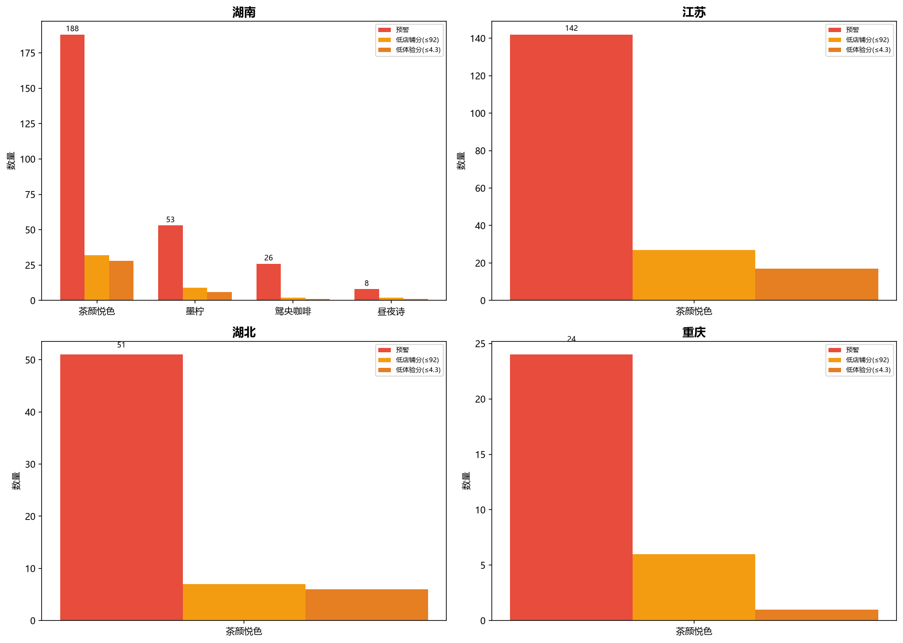
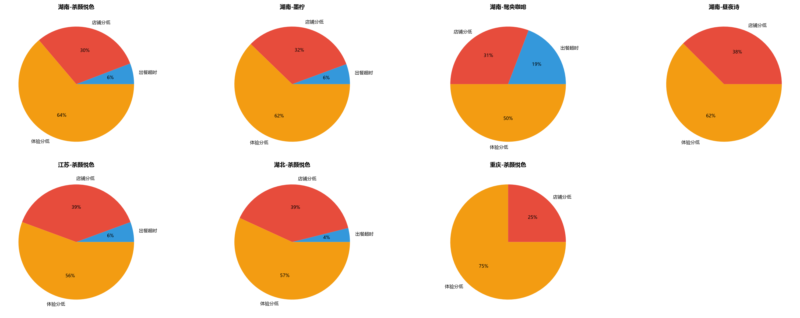
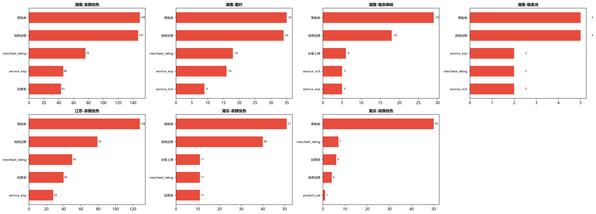
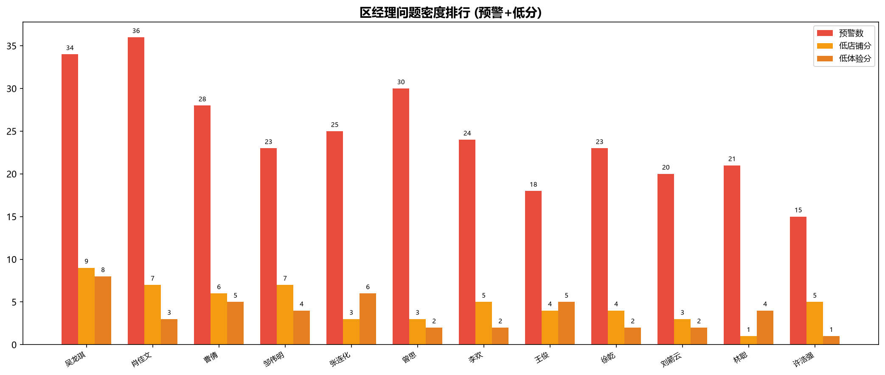

| 排名 | 门店 | 店铺分 | 体验分 | 预警 | 核心病灶 | 负责人 |
|---|---|---|---|---|---|---|
| 1 | 娄底万豪城市广场茶叶子 | 29.0 | -- | 2 | 拒单率 0.0回复率 0.0product_quality 0.0service_exp 0.0product_sat 0.0pack_sat 0.0复购率 0.0消息回复 0.0service_neg 0.0食品安全 0.0出餐上报 0.0 | 曹倩 |
| 2 | 汉寿万达广场一楼茶叶子 | 74.0 | -- | 2 | 拒单率 0.0回复率 0.0product_quality 0.0service_exp 0.0product_sat 0.0pack_sat 0.0复购率 3.1消息回复 3.7 | 肖佳文 |
| 3 | 王府井桃花源游园会店 | 76.0 | -- | 2 | product_quality 0.0service_exp 0.0product_sat 0.0pack_sat 0.0复购率 3.0消息回复 3.2 | 吴龙琪 |
| 4 | 株洲职教城茶叶子 | 90.0 | -- | 2 | product_quality 0.0service_exp 0.0复购率 3.5消息回复 3.1 | 张连化 |
| 5 | 郴州林邑星城店 | -- | 4.1 | 2 | 拒单率 0.0回复率 0.0product_quality 4.1service_exp 3.9复购率 3.0消息回复 3.2 | 吴龙琪 |
| 6 | 衡阳南华大学茶叶子 | -- | 4.1 | 2 | 拒单率 0.0回复率 0.0product_quality 4.0service_exp 4.1复购率 3.4消息回复 3.9食品安全 3.4 | 吴龙琪 |
| 7 | 郴州欢乐海岸店 | -- | 4.2 | 2 | 拒单率 0.0回复率 0.0service_exp 3.7复购率 3.0消息回复 3.5service_neg 3.9 | 吴龙琪 |
| 8 | 耒阳南正街茶叶子 | -- | 4.4 | 3 | 出餐10.7分拒单率 0.0回复率 0.0复购率 3.6消息回复 3.5 | 吴龙琪 |
| 9 | 永兴县中心商城茶叶子 | -- | 4.7 | 1 | 拒单率 0.0回复率 0.0消息回复 4.0 | 吴龙琪 |
| 10 | 娄底人文科技学院店 | 73.0 | 4.2 | 2 | 拒单率 0.0回复率 0.0product_quality 4.1复购率 3.0消息回复 3.7 | 曹倩 |
| 11 | 郴州步步高北湖路店 | 72.0 | 4.3 | 2 | 拒单率 0.0回复率 0.0复购率 3.0消息回复 3.6 | 吴龙琪 |
| 12 | 冷水江信和广场一楼茶叶子 | 74.0 | 4.3 | 2 | 拒单率 0.0回复率 0.0service_exp 3.6复购率 4.1消息回复 3.8service_neg 3.4 | 曹倩 |
| 13 | 资兴嘉华国际城游园会店 | 74.0 | 4.4 | 3 | 出餐17.0分拒单率 0.0回复率 0.0复购率 3.1消息回复 3.7 | 吴龙琪 |
| 14 | 常德友阿国际外广场店 | 72.0 | 4.4 | 2 | 拒单率 0.0回复率 0.0复购率 3.3消息回复 3.6 | 肖佳文 |
| 15 | 常德吾悦广场一楼茶叶子 | 74.0 | 4.4 | 2 | 拒单率 0.0回复率 0.0service_exp 4.0复购率 3.4消息回复 3.1 | 肖佳文 |
| 区经理 | 管店 | 预警 | 低店分 | 低体分 | 均店分 | 均体分 |
|---|---|---|---|---|---|---|
| 吴龙琪 | 20 | 34 | 9 | 8 | 62.1 | 4.16 |
| 肖佳文 | 28 | 36 | 7 | 3 | 91.5 | 4.32 |
| 曹倩 | 23 | 28 | 6 | 5 | 90.3 | 4.22 |
| 曾思 | 29 | 30 | 3 | 2 | 95.7 | 4.50 |
| 张连化 | 24 | 25 | 3 | 6 | 95.7 | 4.27 |
| 排名 | 门店 | 店铺分 | 体验分 | 预警 | 核心病灶 | 负责人 |
|---|---|---|---|---|---|---|
| 1 | 古德墨柠望城永旺梦乐城店 | 74.0 | -- | 2 | product_quality 0.0service_exp 0.0product_sat 3.0pack_sat 3.0复购率 3.5消息回复 3.3 | 张良东 |
| 2 | 古德墨柠佳兆业广场店 | 87.0 | 4.3 | 2 | 回复率 0.0复购率 3.0消息回复 3.4 | 徐乾 |
| 3 | 古德墨柠都正街内街店 | 91.0 | 4.2 | 2 | 回复率 50.0product_quality 4.1复购率 3.0消息回复 3.7食品安全 4.1 | 李曦 |
| 4 | 古德墨柠河西通程店 | 93.0 | 4.3 | 2 | service_exp 4.0复购率 3.1消息回复 3.6 | 林阳阳 |
| 5 | 古德墨柠林科大后街店 | 88.0 | 4.5 | 2 | 回复率 0.0service_exp 3.8消息回复 3.8service_neg 3.8 | 林阳阳 |
| 6 | 古德墨柠泉塘店 | 91.0 | 4.4 | 2 | 复购率 3.5 | 徐乾 |
| 7 | 古德墨柠地科家园一楼店 | 92.0 | 4.4 | 2 | 复购率 3.0service_neg 4.0 | 徐乾 |
| 8 | 古德墨柠西中心T3写字楼店 | 97.0 | 4.3 | 2 | 出餐15.4分service_exp 3.7复购率 3.5service_neg 3.3 | 张良东 |
| 9 | 古德墨柠万家丽家居广场店 | 90.0 | 4.5 | 2 | 回复率 66.0复购率 3.9消息回复 4.0 | 李曦 |
| 10 | 古德墨柠龙塘小区店 | 96.0 | 4.2 | 1 | service_exp 3.5product_sat 4.0消息回复 3.2service_neg 3.9 | 徐乾 |
| 11 | 古德墨柠阜埠河地铁1号口店 | 93.0 | 4.4 | 2 | service_exp 4.0复购率 3.0消息回复 3.0 | 林阳阳 |
| 12 | 古德墨柠太平街新胜村口店 | 93.0 | 4.4 | 2 | 回复率 60.0复购率 3.0消息回复 3.9 | 李曦 |
| 13 | 古德墨柠星沙吾悦外街店 | 89.0 | 4.6 | 2 | 出餐14.6分拒单率 74.0复购率 3.1 | 徐乾 |
| 14 | 古德墨柠丰盈西里店 | 94.0 | 4.4 | 2 | 复购率 3.0消息回复 3.6 | 李曦 |
| 15 | 古德墨柠雨花亭凯德二楼店 | 97.0 | 4.3 | 1 | service_exp 3.3复购率 3.1消息回复 3.4service_neg 3.3 | 林阳阳 |
| 区经理 | 管店 | 预警 | 低店分 | 低体分 | 均店分 | 均体分 |
|---|---|---|---|---|---|---|
| 徐乾 | 19 | 23 | 4 | 2 | 95.4 | 4.47 |
| 李曦 | 7 | 11 | 2 | 1 | 94.1 | 4.40 |
| 林阳阳 | 9 | 11 | 1 | 2 | 94.8 | 4.49 |
| 张良东 | 10 | 8 | 2 | 1 | 94.3 | 4.09 |
| 排名 | 门店 | 店铺分 | 体验分 | 预警 | 核心病灶 | 负责人 |
|---|---|---|---|---|---|---|
| 1 | 鸳央梅溪湖步步高B1层店 | 74.0 | -- | 3 | 出餐14.3分product_quality 0.0service_exp 0.0复购率 4.0消息回复 3.0 | 张松滨 |
| 2 | 鸳央友阿百货人民路店 | 84.0 | 4.6 | 1 | 回复率 0.0复购率 3.2 | 张娇 |
| 3 | 鸳央方圆荟G层店 | 93.0 | 4.4 | 2 | 复购率 3.6消息回复 3.4 | 张娇 |
| 4 | 鸳央绿地中心广场店 | 97.0 | 4.3 | 1 | 复购率 3.1消息回复 4.0 | 张娇 |
| 5 | 鸳央建鸿达JW万豪店 | 95.0 | 4.4 | 2 | 回复率 66.0复购率 3.4消息回复 4.1 | 张娇 |
| 6 | 鸳央奥林匹克镖局店 | 96.0 | 4.5 | 2 | 出餐13.9分复购率 3.2消息回复 4.0 | 张松滨 |
| 7 | 鸳央旭辉国际一楼店 | 98.0 | 4.5 | 2 | 出餐13.5分service_exp 4.0复购率 3.5消息回复 3.0 | 张娇 |
| 8 | 鸳央金茂悦创新中心一楼店 | 97.0 | 4.4 | 1 | product_sat 4.0复购率 3.8 | 张松滨 |
| 9 | 鸳央望城永旺梦乐城店 | 97.0 | 4.4 | 1 | service_exp 4.0复购率 3.1消息回复 3.1 | 张松滨 |
| 10 | 鸳央银盆岭万达广场店 | 98.0 | 4.5 | 1 | 复购率 4.0消息回复 3.7 | 张松滨 |
| 11 | 鸳央律政大楼镖局店 | 97.0 | 4.5 | 1 | 复购率 3.4消息回复 3.7 | 张娇 |
| 12 | 鸳央北正街镖局店 | 98.0 | 4.5 | 1 | 复购率 3.0消息回复 3.6 | 张娇 |
| 13 | 鸳央汇金天虹店 | 97.0 | 4.5 | 1 | 复购率 3.5消息回复 4.1 | 张娇 |
| 14 | 鸳央中隆国际广场店 | 98.0 | 4.5 | 1 | 复购率 3.0消息回复 3.8 | 张娇 |
| 15 | 鸳央复地星光店 | 94.0 | 4.6 | 1 | 复购率 4.1 | 张娇 |
| 区经理 | 管店 | 预警 | 低店分 | 低体分 | 均店分 | 均体分 |
|---|---|---|---|---|---|---|
| 张娇 | 17 | 14 | 1 | 1 | 95.8 | 4.54 |
| 张松滨 | 14 | 12 | 1 | 0 | 95.4 | 4.28 |
| 排名 | 门店 | 店铺分 | 体验分 | 预警 | 核心病灶 | 负责人 |
|---|---|---|---|---|---|---|
| 1 | 昼夜后湖小区店 | 92.0 | 4.3 | 2 | product_quality 4.1product_sat 3.7pack_sat 3.5 | 李怡 |
| 2 | 昼夜吉联Mall西广场店 | 88.0 | 4.5 | 2 | 回复率 0.0复购率 3.5 | 李怡 |
| 3 | 昼夜中山亭广场店 | 96.0 | 4.5 | 1 | 复购率 3.2消息回复 3.9 | 李怡 |
| 4 | 昼夜荷花路店 | 98.0 | 4.5 | 1 | service_exp 4.1复购率 3.6消息回复 3.3 | 李怡 |
| 5 | 昼夜突兀店 | 97.0 | 4.5 | 1 | 复购率 3.2消息回复 4.0 | 李怡 |
| 6 | 昼夜城市生活家店 | 93.0 | 4.6 | 1 | service_exp 4.0复购率 4.0消息回复 4.0service_neg 4.0 | 李怡 |
| 区经理 | 管店 | 预警 | 低店分 | 低体分 | 均店分 | 均体分 |
|---|---|---|---|---|---|---|
| 李怡 | 7 | 8 | 2 | 1 | 94.6 | 4.51 |
| 排名 | 门店 | 店铺分 | 体验分 | 预警 | 核心病灶 | 负责人 |
|---|---|---|---|---|---|---|
| 1 | 盐城亭湖宝龙广场茶叶子 | 46.0 | -- | 2 | product_quality 0.0service_exp 0.0product_sat 0.0pack_sat 0.0复购率 0.0消息回复 0.0service_neg 0.0食品安全 0.0出餐上报 0.0 | 邹伟明 |
| 2 | 扬州邗江新城吾悦茶叶子 | 75.0 | -- | 2 | product_quality 0.0service_exp 0.0product_sat 3.0pack_sat 3.0复购率 4.0消息回复 3.0service_neg 3.1 | 邹伟明 |
| 3 | 常州飞龙吾悦广场一楼茶叶子 | 71.0 | 4.3 | 2 | 拒单率 0.0回复率 0.0service_exp 4.0复购率 3.3service_neg 3.9 | 王俊 |
| 4 | 常州钟楼吾悦广场茶叶子 | 74.0 | 4.4 | 3 | 出餐15.2分拒单率 0.0回复率 0.0复购率 3.4消息回复 3.5 | 侯望清 |
| 5 | 常州九洲新世界茶叶子 | 74.0 | 4.4 | 2 | 拒单率 0.0回复率 0.0复购率 3.2消息回复 3.6 | 王俊 |
| 6 | 常州龙城天街一楼茶叶子 | 74.0 | 4.4 | 2 | 拒单率 0.0回复率 0.0复购率 3.3 | 王俊 |
| 7 | 无锡梅里古镇茶叶子 | 90.0 | 4.1 | 2 | 回复率 50.0product_quality 4.1service_exp 4.0product_sat 4.1pack_sat 4.1复购率 3.3service_neg 3.2 | 石泽钦 |
| 8 | 南通海门大有境一楼茶叶子 | 93.0 | 4.1 | 2 | product_quality 4.0product_sat 3.7pack_sat 3.7复购率 3.6service_neg 3.8 | 周斌 |
| 9 | 南京常发广场茶叶子 | 88.0 | 4.3 | 2 | 回复率 25.0复购率 3.1食品安全 4.1 | 邹伟明 |
| 10 | 南京NOWS新座店 | 92.0 | 4.2 | 2 | 回复率 50.0service_exp 3.5复购率 3.0消息回复 3.4service_neg 3.6 | 李欢 |
| 11 | 南京宜悦里G66一楼店 | 87.0 | 4.4 | 2 | 回复率 0.0复购率 3.4service_neg 4.0 | 李欢 |
| 12 | 淮安楚州万达广场一楼茶叶子 | 85.0 | 4.5 | 2 | 回复率 0.0复购率 3.4消息回复 3.4 | 邹伟明 |
| 13 | 南京南瑞路宜悦里茶叶子 | 87.0 | 4.5 | 2 | 回复率 0.0复购率 3.2 | 邹伟明 |
| 14 | 南通文峰大世界一楼茶叶子 | 87.0 | 4.5 | 2 | 回复率 0.0service_exp 4.1复购率 3.5消息回复 3.4 | 周斌 |
| 15 | 泰州海陵北路茶叶子 | 87.0 | 4.5 | 2 | 回复率 0.0复购率 3.4消息回复 4.0 | 李欢 |
| 区经理 | 管店 | 预警 | 低店分 | 低体分 | 均店分 | 均体分 |
|---|---|---|---|---|---|---|
| 邹伟明 | 23 | 23 | 7 | 4 | 91.4 | 4.13 |
| 李欢 | 21 | 24 | 5 | 2 | 94.9 | 4.50 |
| 王俊 | 15 | 18 | 4 | 5 | 91.2 | 4.43 |
| 曹海龙 | 12 | 15 | 3 | 1 | 94.0 | 4.53 |
| 周斌 | 13 | 14 | 3 | 2 | 93.5 | 4.50 |
| 排名 | 门店 | 店铺分 | 体验分 | 预警 | 核心病灶 | 负责人 |
|---|---|---|---|---|---|---|
| 1 | 恩施九立方国际购物中心茶叶子 | 72.0 | 4.6 | 1 | 拒单率 0.0回复率 0.0复购率 3.8 | 许浩强 |
| 2 | 武汉亚贸广场茶叶子 | 87.0 | 4.3 | 2 | 回复率 0.0复购率 3.0消息回复 3.8 | 许浩强 |
| 3 | 宜昌兴发广场茶叶子 | 87.0 | 4.4 | 2 | 回复率 0.0复购率 3.0消息回复 3.8 | 许浩强 |
| 4 | 武汉武商MALLC座7楼店 | 92.0 | 4.3 | 2 | product_quality 4.0product_sat 4.0复购率 3.0 | 刘弯弯 |
| 5 | 黄石万达一楼茶叶子 | 98.0 | 4.3 | 2 | 出餐12.9分消息回复 3.8食品安全 3.3 | 林聪 |
| 6 | 武汉汉口欧亚达游园会店 | 95.0 | 4.3 | 1 | 复购率 3.1消息回复 4.1 | 林聪 |
| 7 | 武汉江宸天街一楼游园会店 | 97.0 | 4.3 | 1 | service_exp 4.0复购率 3.0service_neg 3.8 | 林聪 |
| 8 | 武汉太和里茶叶子 | 98.0 | 4.3 | 1 | 复购率 3.2service_neg 4.0 | 林聪 |
| 9 | 利川市三合嘉百货茶叶子 | 98.0 | 4.4 | 2 | 拒单率 0.0回复率 0.0product_sat 4.0复购率 3.9 | 许浩强 |
| 10 | 武汉街道口季佳PAI店 | 88.0 | 4.6 | 1 | 回复率 0.0复购率 3.2 | 许浩强 |
| 11 | 武汉鸣笛1988店 | 93.0 | 4.5 | 2 | 回复率 50.0复购率 3.3 | 林聪 |
| 12 | 十堰华悦城一楼茶叶子 | 89.0 | 4.8 | 1 | 回复率 0.0 | 许浩强 |
| 13 | 武汉金地广场茶叶子 | 94.0 | 4.5 | 2 | 复购率 3.5消息回复 4.1 | 林聪 |
| 14 | 荆州安良百货一楼茶叶子 | 94.0 | 4.5 | 2 | 复购率 4.0 | 刘弯弯 |
| 15 | 武汉汉秀剧场茶叶子 | 97.0 | 4.4 | 1 | 复购率 3.1消息回复 4.0 | 刘弯弯 |
| 区经理 | 管店 | 预警 | 低店分 | 低体分 | 均店分 | 均体分 |
|---|---|---|---|---|---|---|
| 许浩强 | 24 | 15 | 5 | 1 | 95.1 | 4.60 |
| 林聪 | 32 | 21 | 1 | 4 | 96.8 | 4.56 |
| 刘弯弯 | 27 | 15 | 1 | 1 | 96.9 | 4.57 |
| 排名 | 门店 | 店铺分 | 体验分 | 预警 | 核心病灶 | 负责人 |
|---|---|---|---|---|---|---|
| 1 | 重庆九街亭子店 | 92.0 | 4.3 | 2 | 回复率 50.0复购率 3.0消息回复 4.1 | 王毅 |
| 2 | 重庆龙湖新壹街B馆外街店 | 87.0 | 4.5 | 2 | 回复率 0.0复购率 3.1 | 王毅 |
| 3 | 重庆喜盈门外街美食城店 | 91.0 | 4.5 | 2 | 回复率 50.0复购率 3.1 | 刘灿 |
| 4 | 重庆蘭亭新都汇A入口店 | 87.0 | 4.6 | 1 | 回复率 0.0复购率 3.5 | 邱汉信 |
| 5 | 重庆大学城熙街二期店 | 88.0 | 4.6 | 1 | 回复率 0.0复购率 3.5 | 刘灿 |
| 6 | 重庆磁器口正街店 | 88.0 | 4.7 | 1 | 回复率 0.0复购率 4.1 | 刘灿 |
| 7 | 重庆北碚天生丽街茶叶子 | 97.0 | 4.4 | 1 | product_sat 4.0复购率 4.0 | 邱汉信 |
| 8 | 重庆星光68二期店 | 98.0 | 4.4 | 1 | service_exp 4.0复购率 4.0消息回复 4.0service_neg 4.0食品安全 4.0 | 王毅 |
| 9 | 重庆八一路好吃街店 | 97.0 | 4.5 | 1 | 复购率 3.2 | 王毅 |
| 10 | 重庆鲁祖庙茶叶子 | 98.0 | 4.5 | 1 | 复购率 3.1 | 邱汉信 |
| 11 | 重庆金港国际店 | 97.0 | 4.5 | 1 | 复购率 3.3 | 邱汉信 |
| 12 | 重庆重百大楼新潮商场负一楼店 | 98.0 | 4.5 | 1 | 复购率 3.0 | 刘灿 |
| 13 | 重庆巴蜀国潮美食城店 | 97.0 | 4.5 | 1 | 复购率 3.0 | 王毅 |
| 14 | 重庆西城天街南门外街茶叶子 | 98.0 | 4.5 | 1 | 复购率 3.1 | 刘灿 |
| 15 | 重庆大学城熙街茶叶子 | 97.0 | 4.5 | 1 | 复购率 3.5 | 刘灿 |
| 区经理 | 管店 | 预警 | 低店分 | 低体分 | 均店分 | 均体分 |
|---|---|---|---|---|---|---|
| 刘灿 | 21 | 10 | 3 | 0 | 96.7 | 4.60 |
| 王毅 | 18 | 8 | 2 | 1 | 96.8 | 4.57 |
| 邱汉信 | 15 | 6 | 1 | 0 | 97.2 | 4.63 |